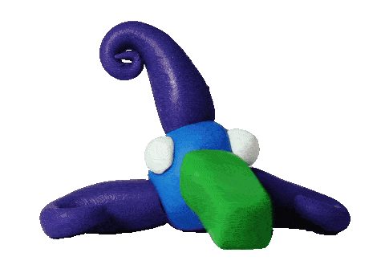

1. {cenzo}
2. {grief}
3. {cryptwarbler}
5. {william hazard}
7. {caloric}
8. {sacred-web}
9. {madeline young}
11. {Mark Cetilia}
12. {dots}
13. {cancelled.work}
14. {craow}
15. {cca.org}
16. {RCSRI}
17. {Texture Town}
18. {Daniel Fishkin}
19. {Yasunaga Work}
20. {wtf is my ip}
21. {RUBY}
21. {incognitothief}
resources:
Electronic EntomologySolar Engines
74c14 IC
Handmade Electronic Music
Lunetta
moosack
sdiy
catgirlsynth
squarewaveparade
geartek
on barres
Other Webrings:
The retronaut webring
